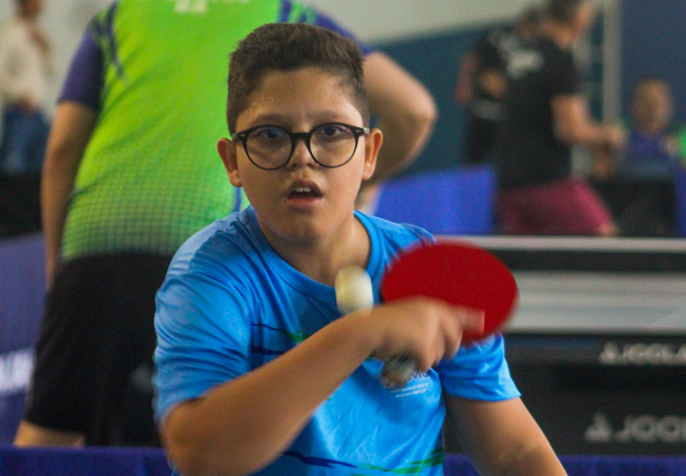
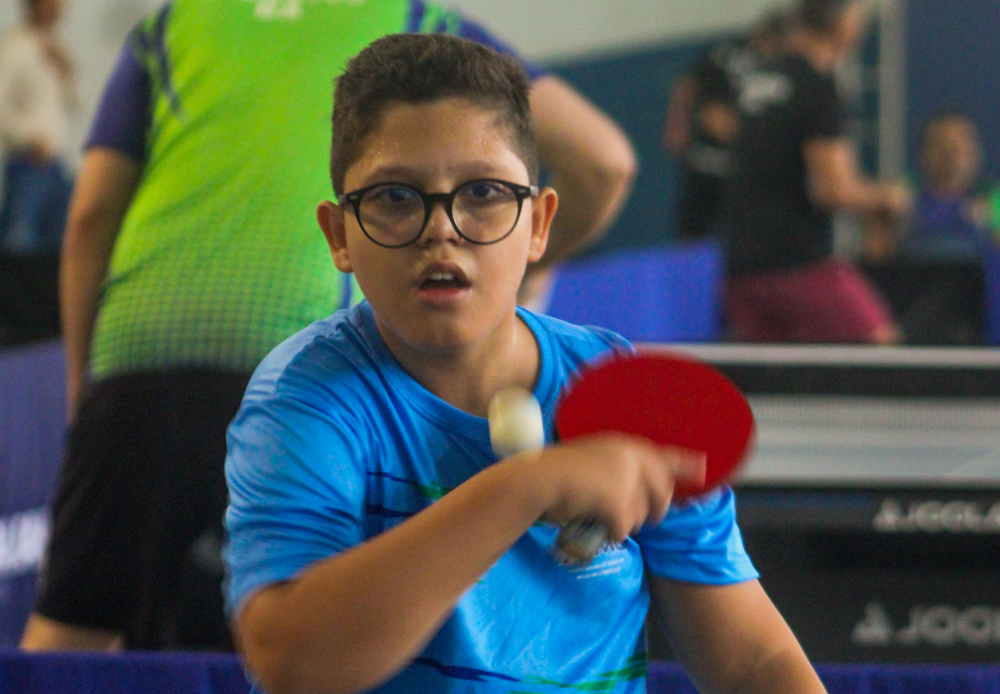

Marcelo, nascido em 09/11/2011 em Salvador, BA, é uma promessa do tênis de mesa baiano. [cite: 8] [cite_start]Conhecido por sua dedicação, resiliência e espírito esportivo, treina diariamente buscando aprimorar não só a técnica, mas também valores como disciplina e respeito. [cite: 9, 10] [cite_start]Filiado à Federação de Tênis de Mesa da Bahia (FTMBA), é um atleta focado, que valoriza o aprendizado constante e atua como referência para jovens iniciantes em projetos sociais. [cite: 11, 13, 14]
1º lugar nos Jogos Internos Montessoriano. [cite: 46]
[cite_start]
Campeão do Campeonato Serrinhense/AABB. [cite: 47]
[cite_start]
Diversos pódios no Circuito Baiano de Tênis de Mesa. [cite: 48]
[cite_start]
Múltiplos títulos em etapas municipais e estaduais e medalhas em festivais escolares. [cite: 12, 49]
PROJETO
Fortalecimento e Excelência Esportiva
[cite_start]
Objetivo Geral: Consolidar Marcelo como um exemplo de excelência no tênis de mesa, potencializando seu desenvolvimento técnico, físico, mental e social. [cite: 19]
[cite_start]
Valor Solicitado: R$ 40.000,00 para o período de 12 meses (Jan-Dez/2026). [cite: 5, 6]
Objetivos Específicos
[cite_start]
Participar de pelo menos 12 competições oficiais em 2026. [cite: 21, 55]
[cite_start]
Alcançar o top 3 do ranking estadual SUB-15. [cite: 21, 56]
[cite_start]
Realizar até 6 sessões semanais de treino focado na evolução técnica e estratégica. [cite: 21, 57]
[cite_start]
Garantir suporte multidisciplinar com acompanhamento médico, nutricional e psicológico. [cite: 15, 58]
[cite_start]
Monitorar e analisar o desempenho com ferramentas digitais. [cite: 22]


 
